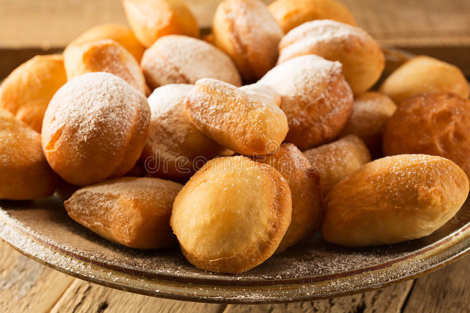

Baursak is a delicious puffy fried bread served on special occasions all over Kazakhstan. ... It is said that the smell of the oil and the frying baursak floats high into the sky so that your dead loved ones can feed on the aroma and enjoy them with you. It's a beautiful thought as you fry.
Boortsog or bawïrsaq is a type of fried dough food found in the cuisines of Central Asia, Idel-Ural, Mongolia and the Middle East. It is shaped into either triangles or sometimes spheres. The dough consists of flour, yeast, milk, eggs, margarine, salt, sugar, and fat.

#
Name
Price
Ingredients
1
Baursaks
400tg
2 cups flour · 1 Tablespoon yeast · 1/4 cup water · 1/4 cup milk · 1 egg · 1 Tablespoon butter or margarine